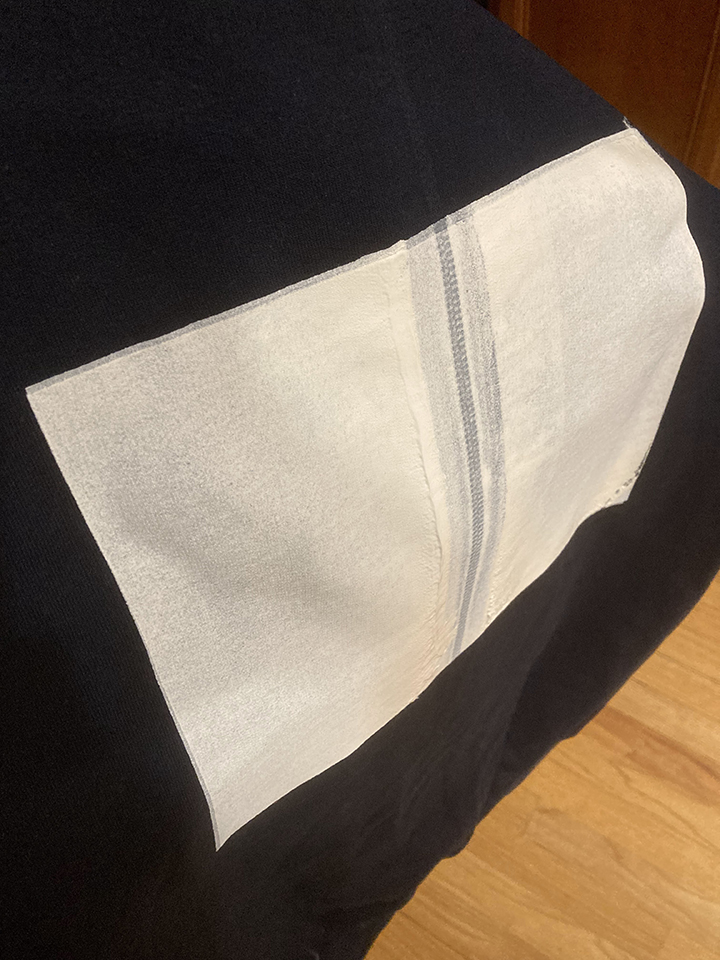
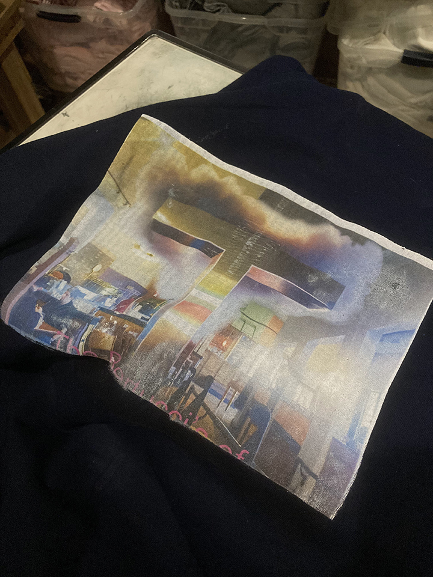
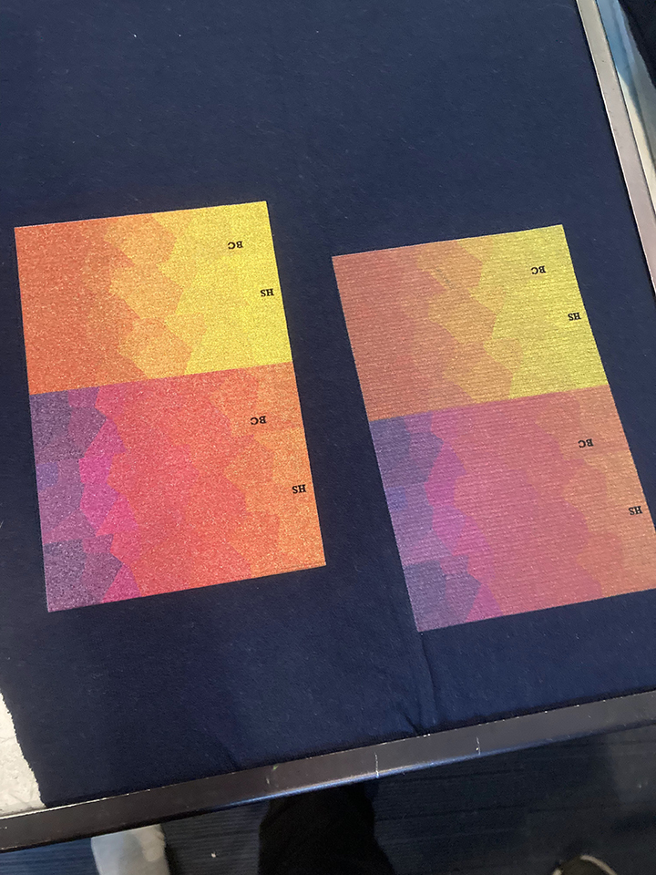
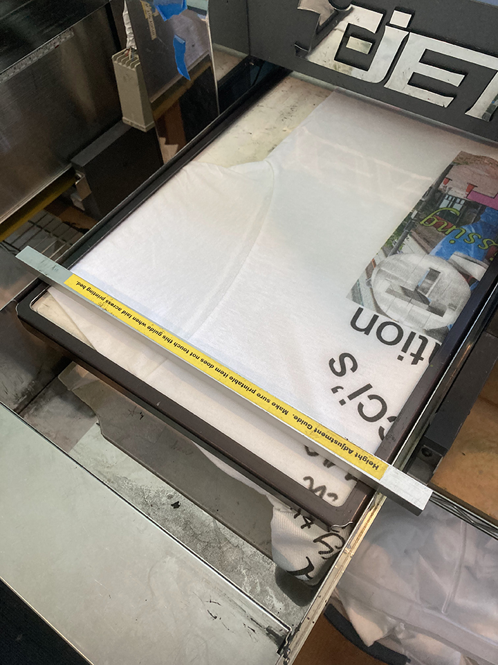
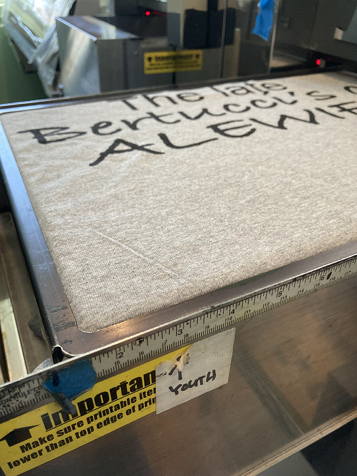
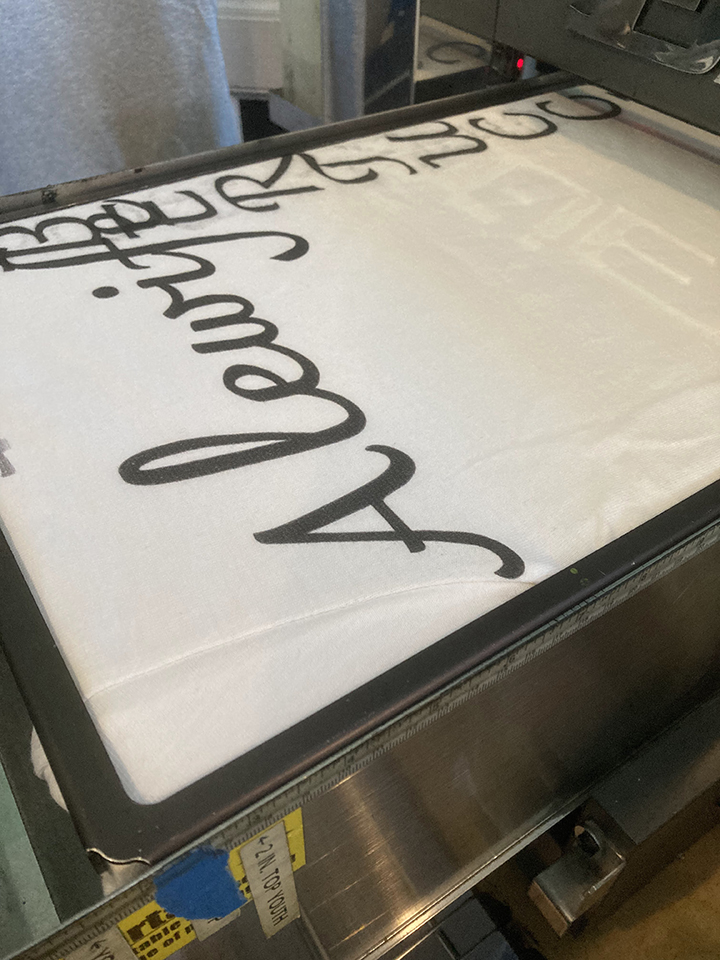
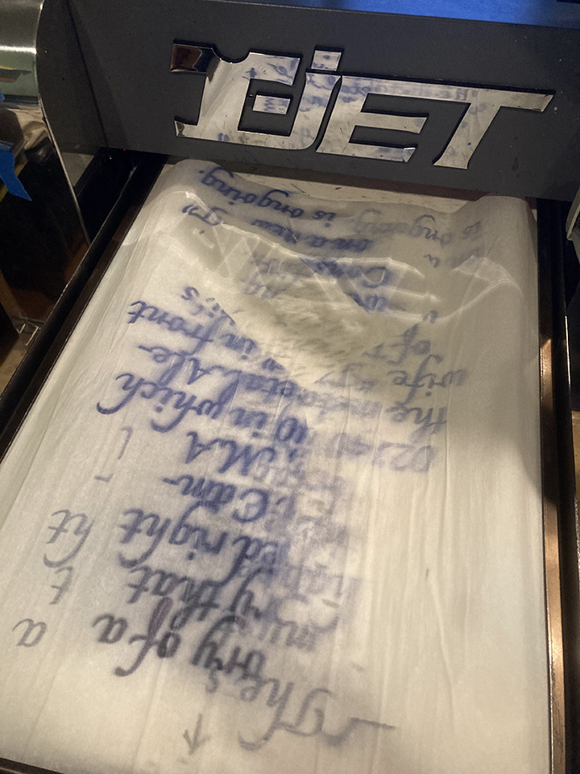
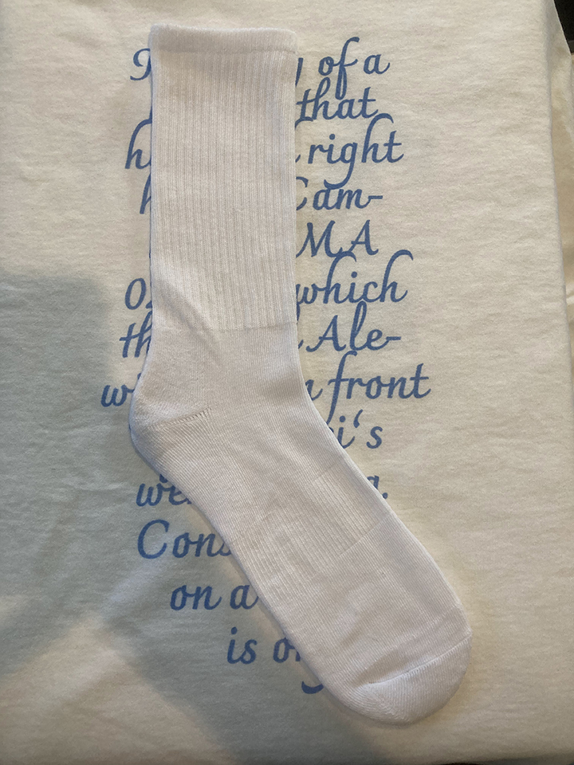
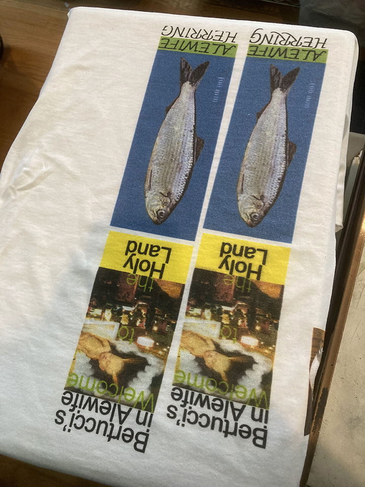

| 05/04/24 |
| Lookbook photos are complete. Currently deciding when to release the collection and how to properly build up hype with several instagram posts. What is the proper number of posts to make? One does not want to post too much or too little. The lookbook photos of this collection take place in a few different locations, both indoor and outdoor, with a few of my friends modeling and aiding in creative decision making. I think they are by far my most complete and interesting scenario-based photos of the clothes on people, which is partly due to a collaborative environment that I allowed for. Most of the time I enjoy making solitary creative decisions, but, for photoshoots especially, I've learned it's good to be receptive to input from others. |
| 04/20/24 |
| Thinking about both traditional and nontraditional marketing methods for the new collection, both of which I can not reveal. I am keeping them secret. |
| 04/18/24 |
| Starting to work on this website. |
| 04/12/24 |
| Product photos for the new collection were taken. |
| 04/11/24 |
| Production of the new collection for photo and marketing purposes is complete. |
| 04/09/24–04/11/24 |
| Underbase Experiments |
It has long been sought after: the ability to efficiently print light graphics on dark garments using direct-to-garment printing as the process requires a few extra, fairly laborious steps that are often more trouble than its worth. In my efforts to create a thematically interesting and financially successful clothing brand, I pretty consistently feel the need to expand into the dark garment territory even though my tools may not be built for it. This cumpulsion stems from a few insecurities/desires:
|
|  I came up with the idea of screenprinting on a rectangular underbase even before seeing it had been discussed on the forums. It seemed, from a purely hypothetical standpoint, a real possibility considering the opaqueness of screenprinting ink. Additionally, I had a few photo based graphics for this collection which were contained within a rectangle—because of the lack of emulsion-based resources (power-washer, transparency printer, exposure unit, etc.), I figured you would only be able to theoretically print graphics contained within a rectangle. Also, because of possible registration issues, you would need to consider leaving some margin for trapping purposes. The main concern presented by others online was the combination of plastisol and T-Jet inks and if the two would interact well. After consulting the team (my dad) and watching a fairly convincing youtube video, I decided it would be worth a shot and bought a 20x24" Blick screen, a medium sized container of white Speedball® Fabric Ink, and a 8" wooden handled Blick Squeegee. I then screenprinted a white rectangle on a scrap, navy blue hoodie. |
|  After letting the screenprinted white square dry, I tried a few different order combinations of heat-pressing, pretreating, and not pretreating. The above photo is a result of screenprinting then heatpressing then immediately DTG printing then heatpressing again, in that order. After that last heatpress, the print actually looked quite good; it seemed to be sitting atop the plastisol screenprint ink nicely and looked more vibrant than using the white ink underbase from the T-Jet. Alas, after doing a quick wash test, the DTG ink washed off, leaving the ever-ghostly void of the white screenprinted rectangle. |
|  Here is a photo of a test print after I ultimately decided to return to using the white DTG ink on a pretreated garment, much to the T-Jet's chagrin. One of the problems with white DTG ink, I've been told, is its consistency, which is partly an adhesive glue-like substance, which is damaging to the print head, which often gets clogged by the ink. It is a sacrifice one must make, however. On the left is the print with 3 underbase passes (coats of white ink) and on the right is the print with 2 underbase passes. After some tweaking with the "Ink" button on the T-Jet, the 3 underbase option proved to be satisfactory and I proceeded with that method for the final hoodies. |
| 04/09/24 |
| Printing |
|  Positioning of a sleeve/shoulder print. Height adjustments are necessary because of the seam connecting the sleeve to the torso. |
|  A technique I use to maximize the width of a continuous graphic is arranging the shirt on the printing tray perpendicular to the printer itself. The graphic should be rotated 90 degrees clockwise on FastArtist. This allows the graphic to be approximately 17" wide. |
|  Positioning tests. |
|  I put parchment paper on the printing tray behind the sock when printing in order to print an all over design without getting ink on the tray. I later extended the graphic to 12x16" to allow for more room for error. |
|  Color tests. |
©2024